Unidad 2
Sistemas Operativos Monotarea
Ejecución de Programas
La función primordial de un S.O. es la ejecución de programas.
Un programa es estático.
El S.O. carga el programa en memoria. Esa entidad dinámica es conocida como proceso.
Estado de un Proceso
A medida que un proceso se ejecuta va cambiando su estado.
Qué información define el estado del proceso?
- Registros de la CPU
- Puntero de pila y heap
- Archivos abiertos y posición en los mismos.
El S.O. debe almacenar esta información?
Bloque de Control de Procesos
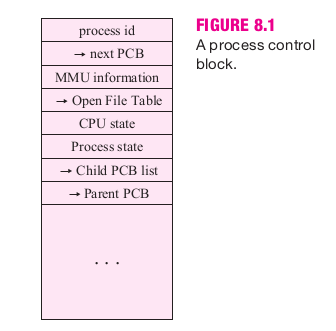Estructura que almacena la información de los procesos del sistema.
Se actualiza cuando el proceso deja de correr.
Estados de un Proceso
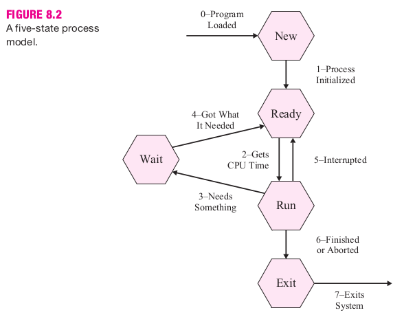Hay modelos con diferentes números de estados.
Con excepción de Ejecutando puede haber varios procesos en cada estado.
Planificación de Procesos
Cuál de los procesos "Listos" obtiene la CPU?.
- FCFS (Primero en llegar, primero en ser atendido).
- Por Prioridades.
- Garantizada.
- (SRTF) Siguiente el trabajo más corto.
- (HRRN) Siguiente mayor tasa de respuesta.
Memoria Principal
Por qué administrar la memoria principal?.
- Cargar la mayor cantidad de procesos.
- LLevar registro de que está libre, asignado y a quién.
- Brindar de manera transparente la memoria que requieran las aplicaciones.
Creación de Programas
- Escritura de código fuente.
- Compilación.
- Enlazado.
- Carga en memoria.
- Ejecución.
Un solo proceso
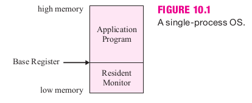Reubicación dinámica
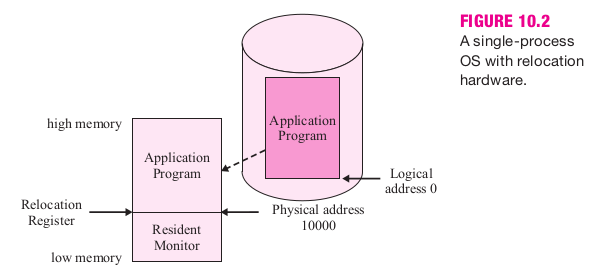 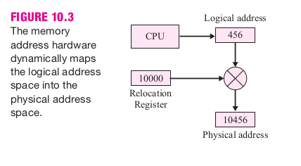Overlays
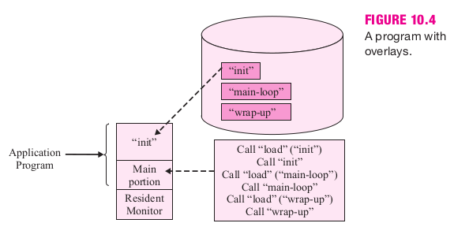Swapping
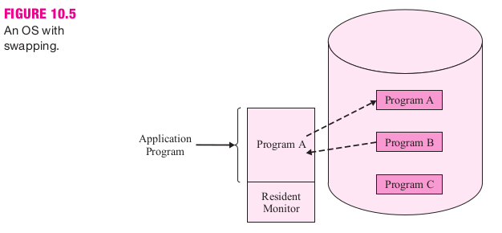Archivos
¿Por qué son necesarios los archivos?
Directorios
Estructura Lógica.
- Un solo nivel.
- Árbol.
- Grafo acíclico.
Un solo nivel
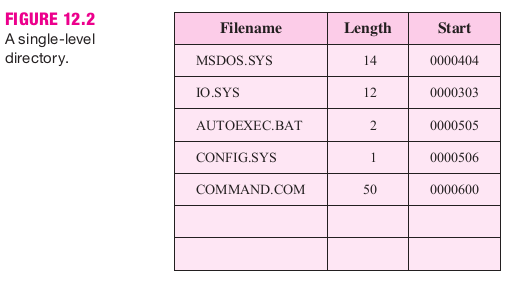Estructura de Árbol
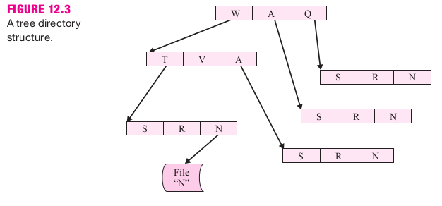Grafo acíclico
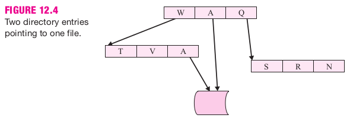Métodos de Acceso
Los programas necesitan diferentes maneras de acceder al contenido del archivo.
- Acceso secuencial.
- Acceso aleatorio.
- Métodos de alto nivel.
- Acceso en bruto (raw).
Gestión de Espacio Libre
El S.O. almacenará los datos de los archivos y directorios en bloques del disco. Para ello debe saber cuáles bloques no han sido utilizados aún.
Se suele emplear una de estas técnicas:
- Lista enlazada.
- Lista enlazada mejorada usando:
- Índices
- Grupos
- Mapas de bits.
Lista enlazada
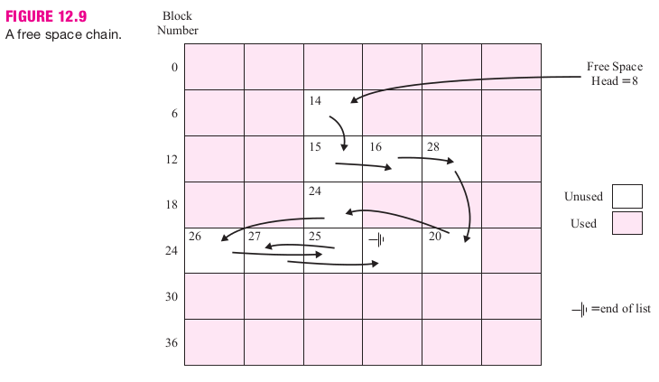Lista enlazada con índices
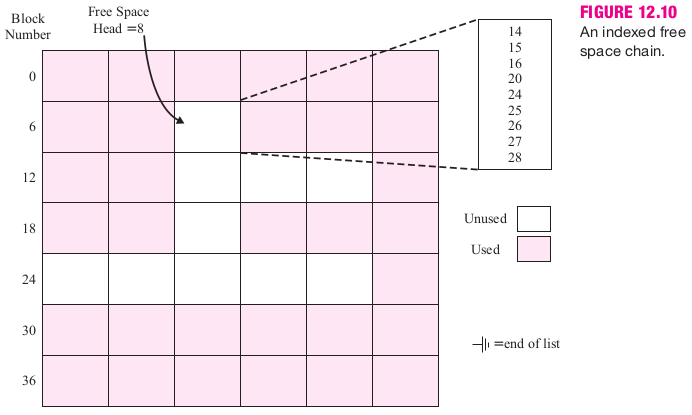Lista enlazada con grupos
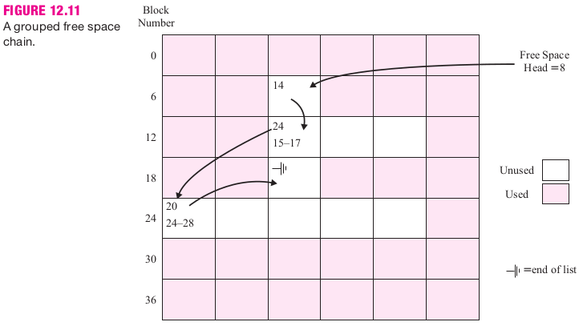Mapas de bits
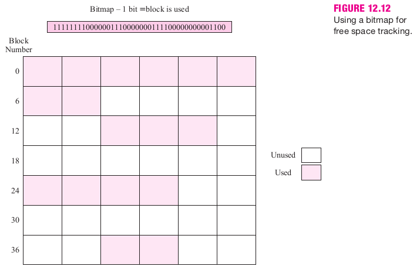Gestión de Espacio Ocupado
Asignación contigua
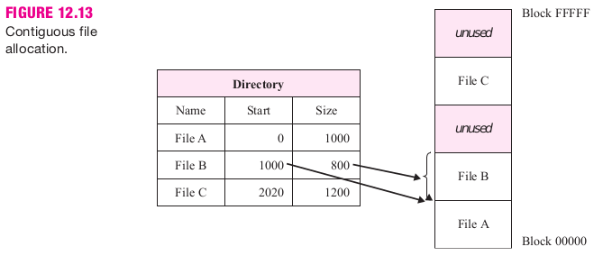Asignación enlazada
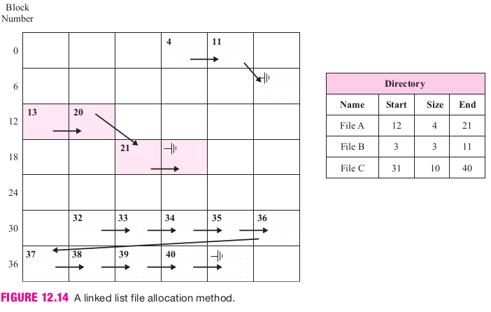Entrada / Salida
Dispositivos
El S.O. debe tener en cuenta las caraterísticas de los dipositivos:
- Acceso secuencial o aleatorio.
- Clase de dispositivo.
- de bloques.
- de caracteres.
- de red.
Tecnologías de E/S
El S.O. debe tener en cuenta las tecnologías de E/S:
- Buffers.
- Cachés.
- Operaciones en bloque.
Organización Física de Discos
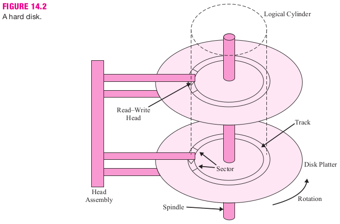Organización Lógica de Discos
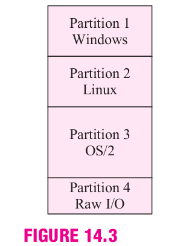Bibliografía
- Elmasri - S.O.: Un enfoque en espiral.
- Capítulo 8: Secciones 8.1 a 8.4.5
- Capítulo 10: Secciones 10.1 a 10.3
- Capítulo 12: Secciones 12.1 a 12.5.2
- Capítulo 14: Secciones 14.1 a 14.5

Gracias!
https://sofrcu.github.io/